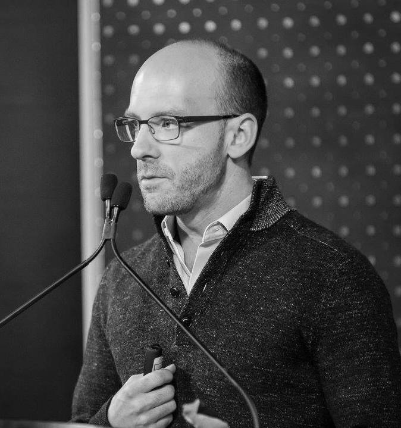

1st International Workshop on Energy Efficient Data Mining and Knowledge Discovery
Co-located with ECML PKDD 2018
September 14, 2018 - Dublin, Ireland
Level 6, All Star 681/682 room, Croke Park
KEYNOTE SPEAKERS

National Research Council of Italy (ISTI)

Google Brain
This workshop aims to bring together people from many different fields
in machine learning and data mining that have a common interest in
energy efficiency, energy aware computing, hardware accelerators,
and embedded systems.
These fields include, but are not limited to: deep learning, big data, Internet of Things (IoT), large-scale computing, stream mining, and distributed machine learning.
The goal is to provide a venue for researchers to present their work, exchange ideas, and discuss challenges related to energy-efficiency in machine learning, data mining, and supporting hardware platforms, and algorithms. We accept original work, already completed, or in progress. Position papers are also considered.
These fields include, but are not limited to: deep learning, big data, Internet of Things (IoT), large-scale computing, stream mining, and distributed machine learning.
The goal is to provide a venue for researchers to present their work, exchange ideas, and discuss challenges related to energy-efficiency in machine learning, data mining, and supporting hardware platforms, and algorithms. We accept original work, already completed, or in progress. Position papers are also considered.
Key Dates
- Workshop paper submission deadline:
July 2, 2018July 12, 2018 - Workshop paper acceptance notification: Monday, July 30, 2018
- Workshop paper camera-ready deadline: Monday, August 6, 2018
- Workshop date: Friday, September 14, 2018
Workshop Chairs
- Eva García-Martín, Blekinge Institute of Technology
- Albert Bifet, Telecom-ParisTech
- Niklas Lavesson, Jönköping University
Steering Committee
- Veselka Boeva, Blekinge Institute of Technology
- Ricardo Baeza-Yates, NTENT
- Håkan Grahn, Blekinge Institute of Technology
- Emiliano Casalicchio, Sapienza University of Rome
- Elena Tsiporkova, Sirris (Collective Center for the Belgian technological industry)